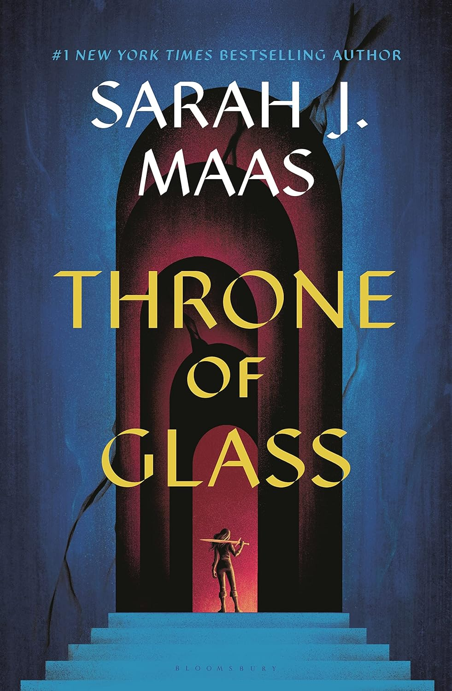

Photography
As an someone passionate about editorial photography, I have spent a lot of time learning about the art of visual storytelling. With a keen eye for detail and an innate sense of creativity, I capture the essence of people, places, and moments in a way that evokes emotion and intrigue. My journey in editorial photography has allowed me to explore a diverse range of subjects, from fashion and lifestyle to news and current events. Through my lens, I strive to convey narratives that inform, inspire, and provoke thought. I am continually honing my skills to ensure that each frame I capture tells a compelling story, whether it's through the use of composition, lighting, or the unique perspective I bring to each project.
Reading
I enjoy reading in my free time and mostly read fantasy, fiction and sci-fi books. Reading provides a outlet for me to escape and focus on a story from another place. I have been reading the Throne of Glass series recently, if you like it please talk to me about it.
